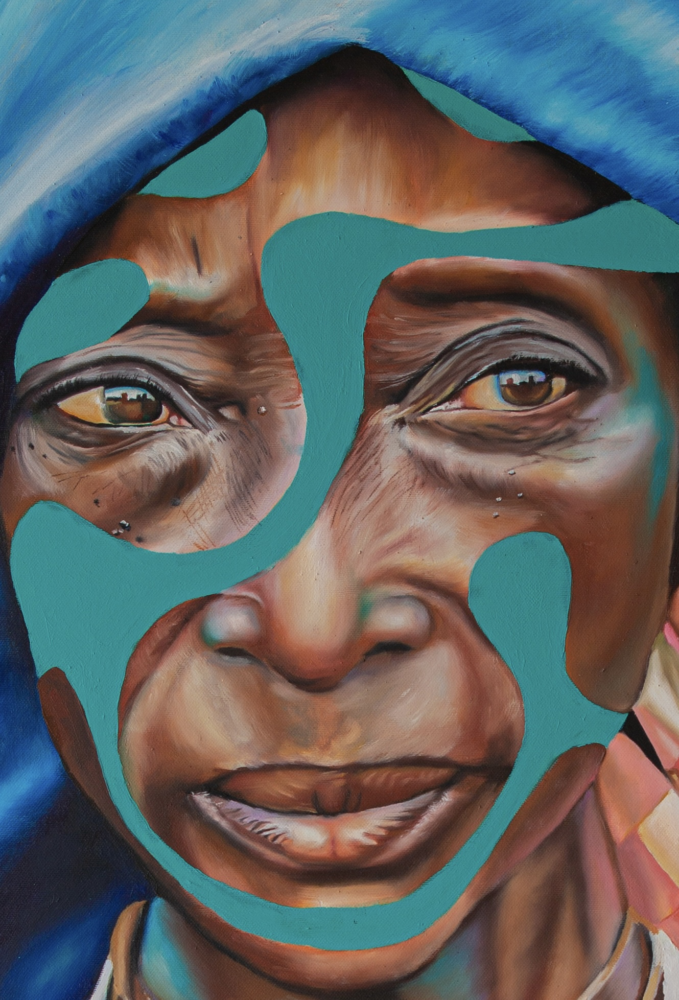
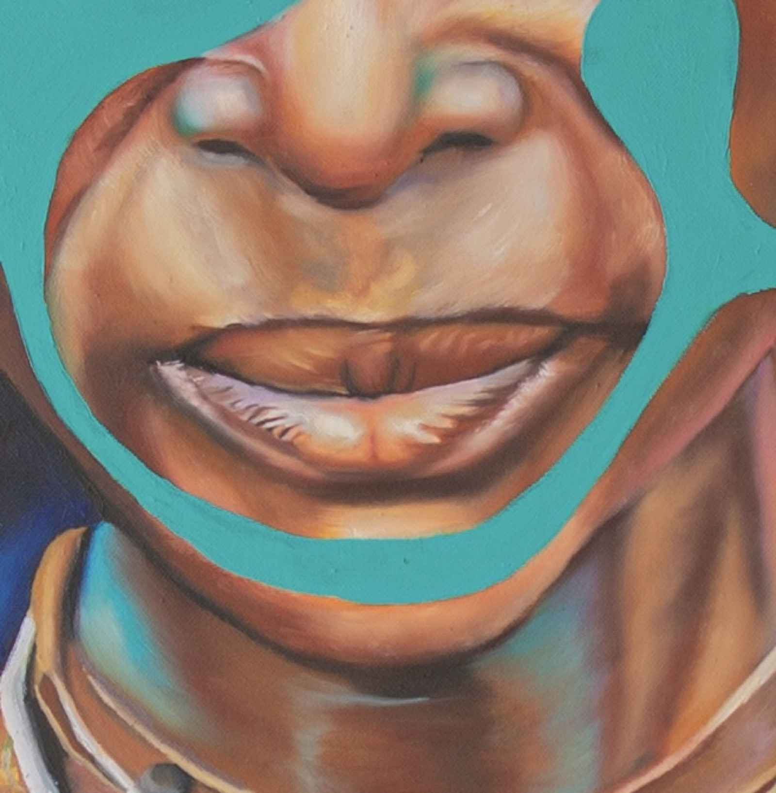
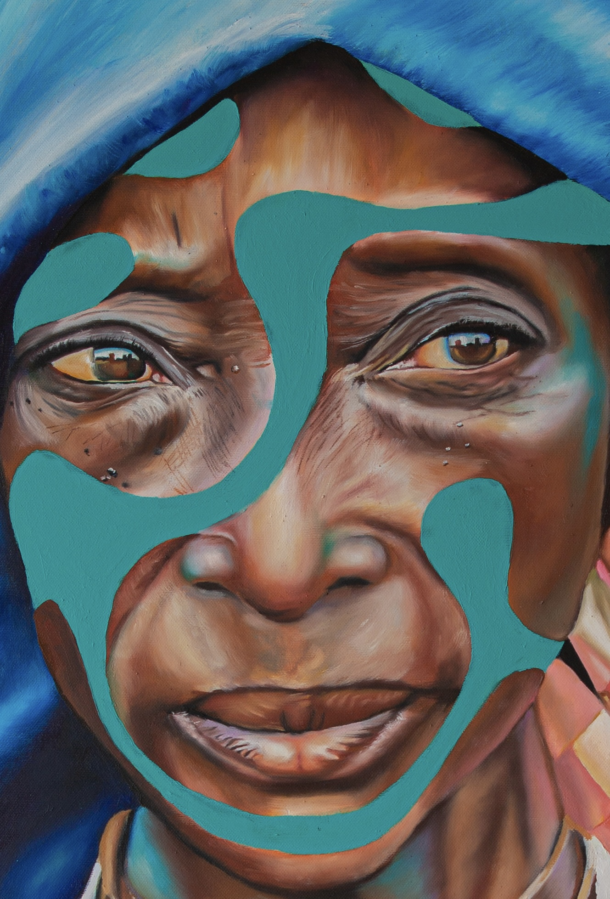
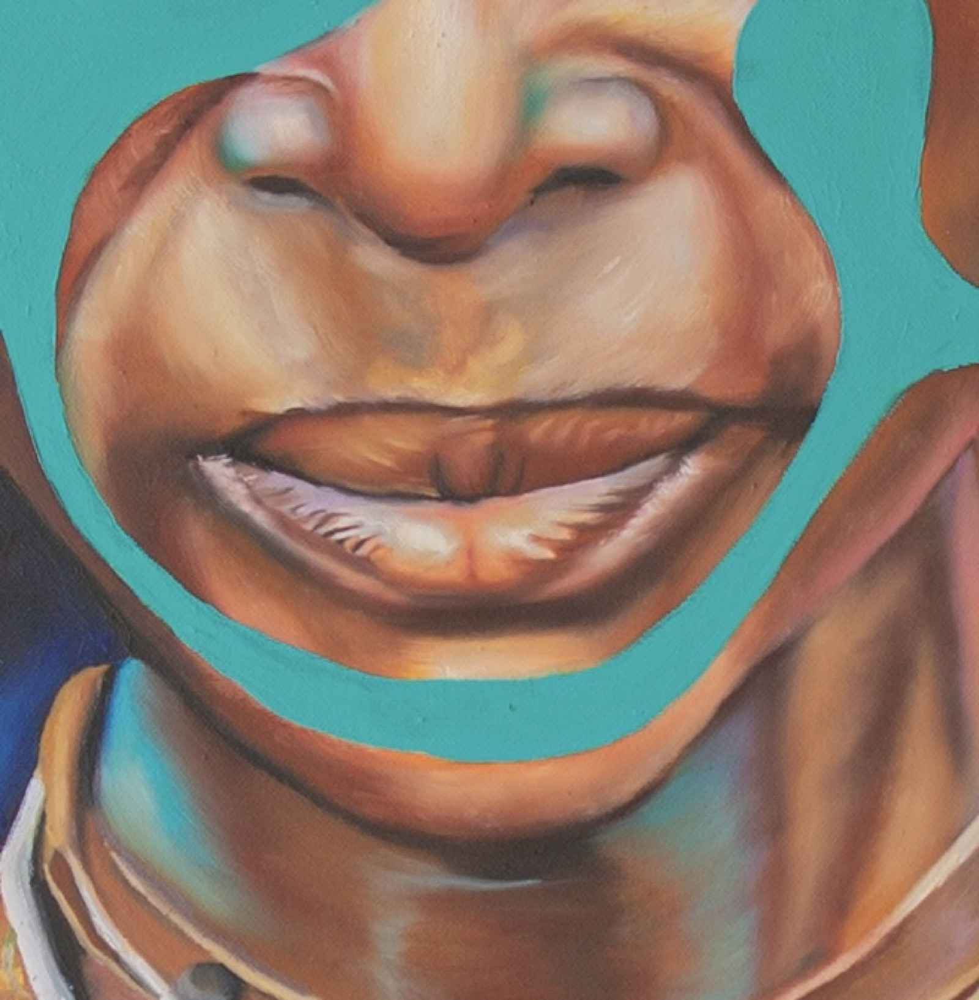

Frame of Mind
Within the dialogue between memory and contemporaneity, Kwabena Lartey's work emerges as a vital and resonant force.
Through a layered and critically aware visual language, Lartey does more than reinterpret the photographic legacies of Trevor Cole and Giovanna Aryafara — he reactivates them, extending their narratives into the present moment.
His practice transforms the archive into a living presence, weaving together cultural inheritance, diasporic identity, and contemporary imagination. Each intervention becomes a space of reflection and renewal, where past and present intersect, challenge one another, and evolve.
In this exhibition, Kwabena Lartey stands as a creative bridge across histories, geographies, and perspectives — an artist who renders cultural continuity as something dynamic, urgent, and profoundly alive.


 


